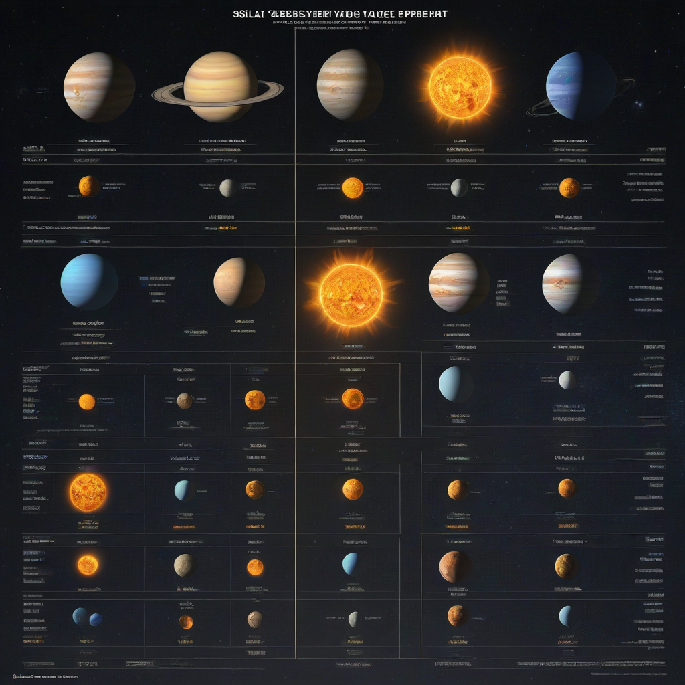

How to Choose how to choose solar system voltage (2026)
Learn everything about how to choose solar system voltage in 2026. Costs, comparisons, expert tips, and buyer's advice for US homeowners.
Updated 2026-05-27. Informational only. Consult a licensed solar installer for your specific project.
For a typical U.S. residential solar + storage system in 2026, 48V DC is the optimal voltage—it balances safety, efficiency, and compatibility with modern inverters and batteries like Tesla Powerwall or Enphase IQ. Choose 120/240V AC for standard home integration, and opt for 48V DC for battery DC-coupling unless you’re installing a large off-grid system (≥10 kW), where 60V or 120V DC may be more cost-effective.
Solar system voltage isn’t just a technical detail—it’s the backbone of your entire energy setup. Get it wrong, and you risk underperformance, premature component failure, or even safety hazards. With the rise of home battery storage and evolving NEC codes, choosing the correct voltage in 2026 requires more nuance than ever. This guide cuts through the confusion, giving you a practical, step-by-step approach to selecting the *right* voltage for your home’s solar system—whether you’re adding panels, going off-grid, or integrating battery storage.
As a solar educator with over a decade of field experience, I’ve seen homeowners overspend on mismatched components or settle for outdated 12V/24V systems that can’t keep pace with modern energy needs. The good news? With today’s standardized 48V DC architectures and flexible inverter options, the right choice is clearer than ever—if you know what to look for. Let’s walk through the decision process together.
Why How to Choose Solar System Voltage Matters
Why Voltage Choice Impacts Your Whole System
System voltage determines how your solar panels, inverters, batteries, and wiring interact. A mismatch can cause:
Excessive energy loss (especially in long wire runs)
Inverter or battery compatibility issues
Need for oversized (and expensive) wiring
Compliance failures with the 2026 National Electrical Code (NEC)
In 2026, most grid-tied home systems use 120/240V AC for output to your panel board—but the *DC side* (panels to inverter/battery) is where voltage selection really matters.
Common Mistakes to Avoid
Homeowners often make these critical errors:
Assuming “more voltage = better”—ignoring safety and cost tradeoffs
Chasing low panel prices without checking inverter MPPT voltage range
Using 12V or 24V battery systems for modern solar storage—leading to oversized wiring and inefficiency
Failing to future-proof for battery expansion (e.g., adding more Powerwalls later)
The biggest oversight? Ignoring the MPPT voltage window of your inverter—exceeding it voids warranties and damages electronics.
What to Expect in 2026
By 2026, expect:
48V DC to dominate new residential battery installations (e.g., Powerwall 3, Enphase IQ Battery 10/15)
Modern string inverters with built-in DC optimizers handling wider voltage ranges (200–600V DC input)
Stricter

NEC Article 690 requirements for rapid shutdown (starting at >100V DC)
More 240V AC microinverters replacing older 120V models
Your system voltage should align with these trends—not work against them.
Step-by-Step Guide to Choosing Your Solar System Voltage
Tools and Data You’ll Need
Before selecting a voltage, gather these key specs:
Analysis time: 1–2 hours (if you have all specs). Wiring layout and component sourcing: 4–6 hours. Full installation: 1–3 days (depending on complexity).
Safety Precautions
⚠️ Critical safety steps before finalizing voltage:
Always design to NEC Article 690.7 (rapid shutdown) and 690.9 (voltage calculations)
Use UL-listed components only—no DIY wiring harnesses
Include overcurrent protection (fuses/breakers) for each string
Verify all voltages stay below the inverter’s max DC input voltage (especially in cold weather when Voc spikes)
Here’s how voltage choice affects your wallet in 2026:
Wire costs drop ~40% when stepping from 24V to 48V DC (thinner wires = less copper)
Inverters
Batteries:
Tesla Powerwall: $11,500–$15,500 installed (30% ITC cuts this to $8,050–$10,850)
Enphase IQ Battery 10: $4,000–$8,000 installed (after ITC)
Panel cost: $2.50–$3.50/watt for standard 400–450W modules in 2026
Where to Save (and Where Not To)
Save here:
Wiring for short DC runs (< 50 ft) with 48V systems
Microinverters instead of string + DC-DC converters (for shaded roofs)
Invest here:
Inverters with wide MPPT voltage ranges (200–600V DC)—they future-proof your array
Batteries with native 48V DC architecture (easier expansion)
Quality DC disconnects and rapid shutdown devices (NEC compliance = no insurance issues)
Frequently Asked Questions
Can I mix 12V, 24V, and 48V components?
No—mixing voltages creates dangerous mismatches. Batteries and inverters must share the same DC voltage platform. If expanding an older 24V system, budget for a full 48V upgrade. Most 2026 systems use 48V DC for batteries and 120/240V AC for home integration.
Why not use 12V like RVs and boats?
12V systems require 4x the current of 48V for the same power—meaning thicker, pricier wiring and higher losses. A 5 kW load at 12V draws 417A; at 48V, it’s just 104A. For home use, 12V is obsolete except for small off-grid accessories.
How do I calculate max string voltage for cold weather?
Use this formula: Max Voc (adjusted) = Panel Voc × [1 + (Temp Coefficient %/°C) × (Tmin – 25°C)] × #panels in series
Example: A panel with Voc = 49.2V, temp coefficient = -0.28%/°C, at -10°C:
49.2 × [1 + (-0.0028) × (-10 – 25)] × 12 = 49.2 × 1.098 × 12 ≈ 647V
Ensure this is below your inverter’s max DC input voltage (usually 600V for hybrid units).
What if my roof has shading? Does voltage choice change?
Shading favors microinverters or power optimizers—but voltage choice stays the same. For DC-coupled batteries, 48V remains optimal. Avoid series-wiring shaded panels; instead, use multiple MPPT inputs or zone-based wiring.
How does voltage affect battery round-trip efficiency?
Lower DC voltages (e.g., 24V) incur higher resistive losses during charge/discharge. In 2026, 48V battery systems achieve 92–95% round-trip efficiency vs. 85–88% for older 24V systems—thanks to better DC-DC converters and lower current.
Do I need 3-phase power for my home solar system?
Residential systems almost always use single-phase 120/240V AC. 3-phase is for commercial (≥100 kW) or off-grid farms. Don’t overcomplicate—stick to standard U.S. home voltage.
Conclusion
Key Takeaways
For most U.S. homeowners in 2026:
Use 48V DC for solar + battery systems (panels to inverter to battery)
Keep AC output at standard 120/240V to match your panel board
Verify inverter MPPT range covers your array’s Vmp and Voc (especially in winter)
Invest in wide-voltage inverters and 48V batteries—they’re the future-proof choice
Your Next Steps
Download your last 12 months of utility bills to calculate daily kWh use
Use NREL’s PVWatts Tool to estimate your solar production
Writer and researcher specializing in residential solar energy systems, costs, and installation guides for US homeowners.
All data verified against 2026 industry sources.
✓ Data verified 2026✓ Updated: 2026-05-27✓ Editorial transparency